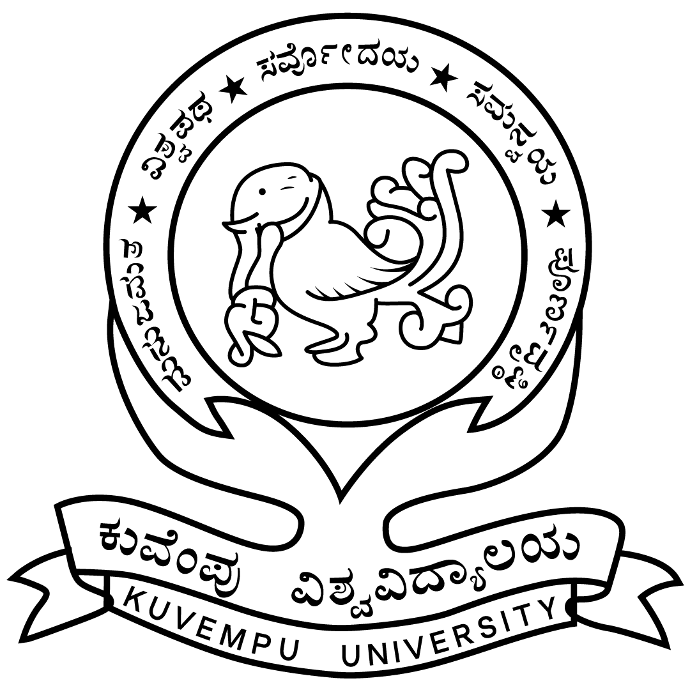
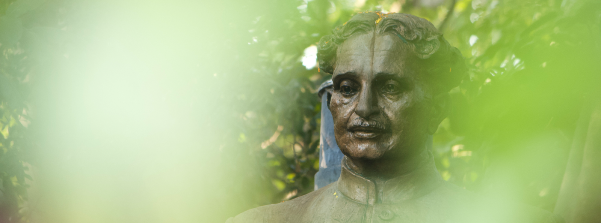
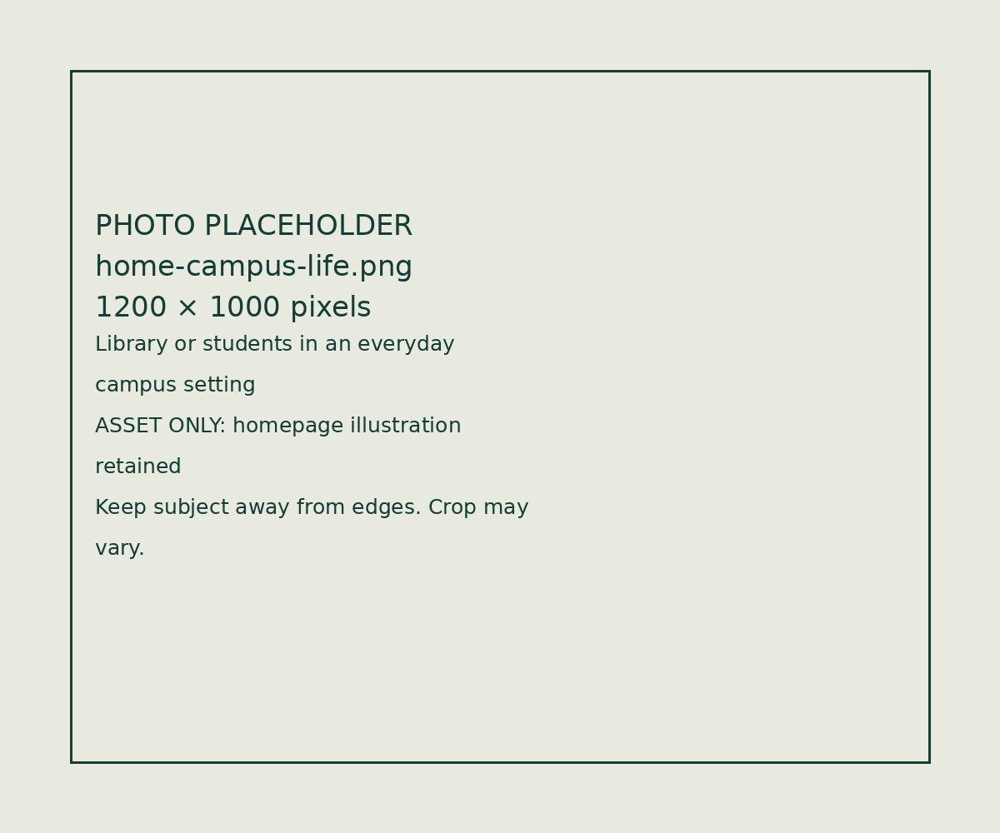

Find your direction
Discover subjects and departments before choosing your next step.
Explore academic areas →
Kuvempu UniversityYour next chapter starts here
Explore what you love. Discover new possibilities. Begin your next chapter at Kuvempu University.

Make room for your ambition
Start with your interests. Explore the academic areas that could shape your next chapter.
No matching academic areas. Try a different word or select another category.
Discover subjects and departments before choosing your next step.
Explore academic areas →Find eligibility, fees, scholarships, and the documents you will need.
Fees & funding →Follow a clear application process with verified dates and guidance.
How to apply →
More than a place to study
Your university experience extends beyond the classroom. Explore the spaces, support, and everyday experiences that make a campus your own.
Follow your curiosity
Make research and opportunity part of the student journey—not a separate world.
Research & discovery
Explore departments, research interests, and opportunities to develop your own questions.
Explore research →Your future
A dedicated space for careers guidance, skills development, and verified student opportunities.
Careers & opportunities →What’s on
Explore university events through the public Teamup calendar. Open an event to read its details.
Public events calendar powered by Teamup. If the calendar does not appear, open it in a new tab ↗. Dates and times follow the calendar’s configured timezone.
Stay in the know
Admissions · sample content slot
Examinations · sample content slot
Funding · sample content slot